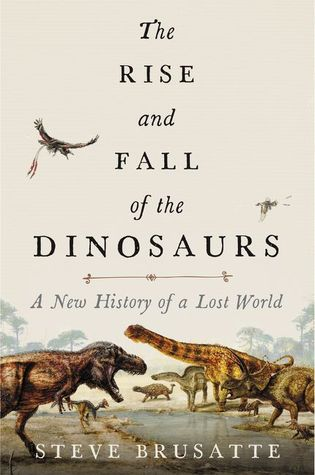

The Rise and Fall of the Dinosaurs: A New History of a Lost World
Reseña por Jorge I. Zuluaga

Ver reseña en GoodReads (necesita cuenta)
Aunque sé que existen muchos textos sobre este tema y a un nivel asequible en inglés (incluso me animé a encargar por Amazon dos de los libros recomendados por este libro), en español solo conozco una abundante literatura infantil, algunas enciclopedias y ensayos de algunos de los grandes de la paleontología, muchos e ellos ahora envejecidos.
Comencé a leer sobre dinosaurios hace ya casi 20 años movido originalmente por el interés de dos de mis hijos cuando estaban en edad escolar.
Primero leí los libros infantiles que les comprábamos y luego empece a adquirir algunas enciclopedias con abundantes dibujos y descripciones anatómicas. Llegue incluso a comprar al menos un libro técnico y a leer algunos papers en el tema.
En aquel tiempo me convertí en un pequeño experto en la fauna mesozoica al punto de resolver las dudas de mis hijos y de otros niños y jóvenes en el Planetario de Medellín donde dicte al menos un curso de un mes (¡que atrevido! ¡dictar un curso para "pichones" de paleontólogos sin ser experto!).
Todo termino, sin embargo, cuando mis hijos crecieron y su interés por los dinosaurios se desvaneció con la velocidad a la que les crecía el bello facial (en realidad ese interés se convirtió después en una pasión por los aviones por lo que me toco también empezar a leer sobre el tema).
Dos décadas después, como es obvio, lo había olvidado todo. O eso creía hasta ayer que empecé a leer este maravilloso relato escrito por un paleontólogo no mucho mayor que el mayor de mis retoños (estoy envejeciendo).
Este maravilloso libro, mezcla de descripciones científicas y anécdotas del trabajo de campo de paleontólogos de verdad, me atrapo desde la primera página. No pude soltar el libro hasta que lo termine en unas horas distribuidas, naturalmente, por al menos un día de lecturas intermitentes.
No puedo decir que el libro logre el mismo efecto en todos. Esta muy bien escrito y casi todo lo que cuenta es interesante pero es obvio que aquel que llega como novato al mundo de los dinosaurios puede encontrar algunos pasajes pesados (muy pocos), con detalles anatómicos o biológicos que podría pensarse son irrelevantes. No me extrañaría que algunos abandonaran el libro en los primeros capítulos (para evitarlo les pido leer esta reseña hasta el final).
Sin embargo, para los "junkies" de los dinosaurios como descubrí que sigo siendo desde que mis hijos me iniciaron en esta "droga" ¡el librito es un verdadero "viaje"! (en sentido "junkie", je, je)
Como su nombre lo indica, el libro nos lleva por el recorrido de casi 190 millones de años que le tomo a los primeros reptiles dinosauromorfos pasando por los pequeños dinosaurios del triásico hasta llegar a la cúspide de su diversidad y dominio de casi cada nicho disponible en la Tierra durante el cálido cretacico cuando un día, posiblemente el peor día en la historia de la vida en la Tierra, un impacto de asteroide o cometa acabo con su idílico y prolongado dominio.
Como dicen por ahí, los dinosaurios se extinguieron porque no tenían programa espacial, una frase que me gusta modificar diciendo que en realidad se extinguieron porque entre ellos nunca nació un "Galileo troodonte".
Una de las mejores características del libro: esta actualizado a los últimos descubrimientos de años recientes (finales de la segunda década del siglo xxi, el libro se publico en 2018). No era para menos cuando es escrito por una de las estrellas "nacientes" de la paleontología mundial. Cuando mis hijos eran unos gomosos eran unos paleontólogos barbados con sombreros campechanos y otros con pintas de hippies o surfeadores los que dominaban el terreno de la paleontología al menos de cara hacia el público. Recuerdo que el último "jovencito" que me toco en aquel entonces, era el ya eminente Paul Sereno que fue precisamente uno de los asesores de Steve Brusatte, autor de este libro.
Para aquellos a quienes no tienen tal vez la paciencia de los gomosos como yo, les recomendaría comenzar a leer el libro en el capítulo 5 "Los dinosaurios tiranos". Es a partir de este punto, y bien entrado el jurásico, cuando el relato se pone más emocionante con el surgimiento de los tiranosauridos, los "carismáticos" dinosaurios carnivoros que se han comido la mitad de los elencos de las películas en el tema que hemos visto en estas dos décadas en el cine.
El capítulo 6, dedicado exclusivamente al Tyrannosaurus rex o simplemente al T-Rex como lo conocemos en la cultura popular, es una verdadera joya de la divulgación científica, en la que el autor nos transporta de manera magistral al tiempo mismo en la que estas bestias del tamaño de autobuses y con cabezas del tamaño de pequeños autos eléctricos, acechaban entre los bosques para aplastar a sus presas. El capítulo esta lleno de datos curiosos que convertirán al T-Rex, otra vez, en el preferido de "toda la familia" (se recomienda leer el capítulo en compañía de niños).
El capítulo 8, un poco más técnico, cuenta la historia de las aves y otros dinosaurios emplumados y alados. Es maravilloso leer este capítulo en 2020 (después de casi 20 años de no leer casi nada sobre dinosaurios pero recordar que la discusión estaba por ese entonces caliente) la afirmación categórica del autor de que ya hoy no hay ninguna duda de que las aves son dinosaurios vivientes. No especies descendientes de dinosaurios, sino dinosaurios en todo su derecho. No todos los dinosaurios desaparecieron hace 66 millones de años; los que aprendieron a volar y habían reducido su tamaño, sobrevivieron para convertirse hoy en... bueno... principalmente comida de homíninos (las gallinas son las aves más numerosas del planeta).
El capítulo final sobre la extinción de los dinosaurios es de lo mejor que he leído sobre el tema en mi vida (soy astrónomo de modo que el tema del impacto a finales del cretácico es un tema sobre el que he leído e incluso escrito durante muchos años). No podía este libro terminar mejor.
En síntesis: 1) si eres un joven o adulto aficionado a la paleontología, debes leer ya este libro; 2) si eres un padre o madre de familia con hijos aficionados a la paleontología, debes leer, con ellos, ya este libro; 3) si no sabes nada de dinosaurios, te gusta la paleontología, e intuyes, tal vez después de esta reseña que el libro merece el esfuerzo, debes leer este libro... pero empezando en el capítulo 5.
¡Feliz lectura!